#Setting path
setwd("/Users/bgpopescu/Dropbox/john_cabot/teaching/stats/lab4/")
life_expectancy <- read.csv(file = './life-expectancy.csv')
urbanization <- read.csv(file = './share-of-population-urban.csv')Lab 4: Statistics
1 Intro to ggplot
ggplot2 in R is one of the most elegant and most versatile graphing libraries in R. It implements the grammar of graphics, a coherent system for describing and building graphs.
In this lab, we will cover the basics of ggplot. We will start by creating simple scatterplots and use that to introduce aesthetic mappings and geometric objects.
We will then walk through visualizing distributions of single variables as well as visualizing relationships between two variables. We’ll finish off with saving your plots and troubleshooting tips.
2 Loading the Data
Let’s go back to our old datasets: life expectancy and urbanization. Let’s open them first.
If you don’t have them anymore, you can download them from the following links:
We should now have in memory the two datasets. Let’s inspect the first 5 entries in both dataframes:
head(life_expectancy, n=5) Entity Code Year Life.expectancy.at.birth..historical.
1 Afghanistan AFG 1950 27.7
2 Afghanistan AFG 1951 28.0
3 Afghanistan AFG 1952 28.4
4 Afghanistan AFG 1953 28.9
5 Afghanistan AFG 1954 29.2head(urbanization, n=5) Entity Code Year Urban.population....of.total.population.
1 Afghanistan AFG 1960 8.401
2 Afghanistan AFG 1961 8.684
3 Afghanistan AFG 1962 8.976
4 Afghanistan AFG 1963 9.276
5 Afghanistan AFG 1964 9.5863 Creating a scatterplot
Let’s say that we want to create a scatterplot depicting the relationship between urbanization and life expectancy. The first thing we need to do is to calculate averages per country. We will proceed as we did previously.
3.1 Create averages
The next step is to create averages for all the countries
library(dplyr)
life_expectancy2 <- life_expectancy %>%
group_by(Code, Entity) %>%
summarize(life_expectancy = mean(Life.expectancy.at.birth..historical.))
urbanization2 <- urbanization %>%
group_by(Code) %>%
summarize(urbanization = mean(Urban.population....of.total.population.))3.2 Inspect the first 5 entries of each new dataframe
head(life_expectancy2, n = 4)# A tibble: 4 × 3
# Groups: Code [1]
Code Entity life_expectancy
<chr> <chr> <dbl>
1 "" Africa 49.7
2 "" Americas 66.8
3 "" Asia 59.2
4 "" Europe 69.0head(urbanization2, n = 4)# A tibble: 4 × 2
Code urbanization
<chr> <dbl>
1 "" 47.7
2 "ABW" 48.1
3 "AFG" 18.6
4 "AGO" 37.5We see that some some entries do not have a code. Why is that? Let’s have a quick look at the original datasets and see what the issue is with those which do not have a code. Let’s first inspect the unique values in Code
unique(life_expectancy$Code) [1] "AFG" "" "ALB" "DZA" "ASM" "AND"
[7] "AGO" "AIA" "ATG" "ARG" "ARM" "ABW"
[13] "AUS" "AUT" "AZE" "BHS" "BHR" "BGD"
[19] "BRB" "BLR" "BEL" "BLZ" "BEN" "BMU"
[25] "BTN" "BOL" "BES" "BIH" "BWA" "BRA"
[31] "VGB" "BRN" "BGR" "BFA" "BDI" "KHM"
[37] "CMR" "CAN" "CPV" "CYM" "CAF" "TCD"
[43] "CHL" "CHN" "COL" "COM" "COG" "COK"
[49] "CRI" "CIV" "HRV" "CUB" "CUW" "CYP"
[55] "CZE" "COD" "DNK" "DJI" "DMA" "DOM"
[61] "ECU" "EGY" "SLV" "GNQ" "ERI" "EST"
[67] "SWZ" "ETH" "FRO" "FLK" "FJI" "FIN"
[73] "FRA" "GUF" "PYF" "GAB" "GMB" "GEO"
[79] "DEU" "GHA" "GIB" "GRC" "GRL" "GRD"
[85] "GLP" "GUM" "GTM" "GGY" "GIN" "GNB"
[91] "GUY" "HTI" "HND" "HKG" "HUN" "ISL"
[97] "IND" "IDN" "IRN" "IRQ" "IRL" "IMN"
[103] "ISR" "ITA" "JAM" "JPN" "JEY" "JOR"
[109] "KAZ" "KEN" "KIR" "OWID_KOS" "KWT" "KGZ"
[115] "LAO" "LVA" "LBN" "LSO" "LBR" "LBY"
[121] "LIE" "LTU" "LUX" "MAC" "MDG" "MWI"
[127] "MYS" "MDV" "MLI" "MLT" "MHL" "MTQ"
[133] "MRT" "MUS" "MYT" "MEX" "FSM" "MDA"
[139] "MCO" "MNG" "MNE" "MSR" "MAR" "MOZ"
[145] "MMR" "NAM" "NRU" "NPL" "NLD" "NCL"
[151] "NZL" "NIC" "NER" "NGA" "NIU" "PRK"
[157] "MKD" "MNP" "NOR" "OMN" "PAK" "PLW"
[163] "PSE" "PAN" "PNG" "PRY" "PER" "PHL"
[169] "POL" "PRT" "PRI" "QAT" "REU" "ROU"
[175] "RUS" "RWA" "SHN" "KNA" "LCA" "MAF"
[181] "SPM" "VCT" "WSM" "SMR" "STP" "SAU"
[187] "SEN" "SRB" "SYC" "SLE" "SGP" "SXM"
[193] "SVK" "SVN" "SLB" "SOM" "ZAF" "KOR"
[199] "SSD" "ESP" "LKA" "SDN" "SUR" "SWE"
[205] "CHE" "SYR" "TWN" "TJK" "TZA" "THA"
[211] "TLS" "TGO" "TKL" "TON" "TTO" "TUN"
[217] "TUR" "TKM" "TCA" "TUV" "UGA" "UKR"
[223] "ARE" "GBR" "USA" "VIR" "URY" "UZB"
[229] "VUT" "VAT" "VEN" "VNM" "WLF" "ESH"
[235] "OWID_WRL" "YEM" "ZMB" "ZWE" So we have some unusual entries such as ““,”OWID_KOS” or “OWID_WRL”. What are these countries? We can do a subset to answer this question.
weird_labels <- c("OWID_KOS", "OWID_WRL", "")
weird_countries <- subset(life_expectancy2, (Code %in%
weird_labels))Let’s inspect them by verifying unique countries
weird_countries2 <- subset(weird_countries, !duplicated(weird_countries$Entity))
head(weird_countries2, n = 10)# A tibble: 10 × 3
# Groups: Code [1]
Code Entity life_expectancy
<chr> <chr> <dbl>
1 "" Africa 49.7
2 "" Americas 66.8
3 "" Asia 59.2
4 "" Europe 69.0
5 "" High-income countries 73.9
6 "" Land-locked Developing Countries (LLDC) 50.8
7 "" Latin America and the Caribbean 64.6
8 "" Least developed countries 49.8
9 "" Less developed regions 58.4
10 "" Less developed regions, excluding China 56.8So what is the problem with these data?
The problem is that these are aggregates that were decided by Our World in Data. So, we should remove them from the data. The way to do that is subsetting them based on the names that seemed problematic. Note the difference in code from before !(Code %% weird_labels) vs. (Code %% weird_labels)
3.3 Cleaning our dataset
weird_labels <- c("OWID_KOS", "OWID_WRL", "")
clean_countries<-subset(life_expectancy2, !(Code %in% weird_labels))
head(clean_countries, n=5)# A tibble: 5 × 3
# Groups: Code [5]
Code Entity life_expectancy
<chr> <chr> <dbl>
1 ABW Aruba 70.3
2 AFG Afghanistan 45.4
3 AGO Angola 45.1
4 AIA Anguilla 69.4
5 ALB Albania 68.3Great! Let’s repeat the procedure for urbanization.
weird_labels <- c("OWID_KOS", "OWID_WRL", "")
clean_countries_urbanization<-subset(urbanization2, !(Code %in% weird_labels))
head(clean_countries_urbanization, n=5)# A tibble: 5 × 2
Code urbanization
<chr> <dbl>
1 ABW 48.1
2 AFG 18.6
3 AGO 37.5
4 ALB 40.4
5 AND 87.03.4 Performing a left merge
We will now perform a left merge whereby we try to merge urbanization data to life expectancy based on Code.
new_data<-left_join(clean_countries, clean_countries_urbanization, by = c("Code"="Code"))
head(new_data, n=10)# A tibble: 10 × 4
# Groups: Code [10]
Code Entity life_expectancy urbanization
<chr> <chr> <dbl> <dbl>
1 ABW Aruba 70.3 48.1
2 AFG Afghanistan 45.4 18.6
3 AGO Angola 45.1 37.5
4 AIA Anguilla 69.4 NA
5 ALB Albania 68.3 40.4
6 AND Andorra 77.0 87.0
7 ARE United Arab Emirates 66.1 80.7
8 ARG Argentina 65.4 85.3
9 ARM Armenia 67.2 63.1
10 ASM American Samoa 68.6 79.83.5 Getting rid of NAs for urbanization
new_data2<-subset(na.omit(new_data))
head(new_data2, n=10)# A tibble: 10 × 4
# Groups: Code [10]
Code Entity life_expectancy urbanization
<chr> <chr> <dbl> <dbl>
1 ABW Aruba 70.3 48.1
2 AFG Afghanistan 45.4 18.6
3 AGO Angola 45.1 37.5
4 ALB Albania 68.3 40.4
5 AND Andorra 77.0 87.0
6 ARE United Arab Emirates 66.1 80.7
7 ARG Argentina 65.4 85.3
8 ARM Armenia 67.2 63.1
9 ASM American Samoa 68.6 79.8
10 ATG Antigua and Barbuda 71.2 32.4How many countries did we drop?
nrow(new_data) - nrow(new_data2)[1] 21What are those countries?
countries_dropped<-new_data[!complete.cases(new_data), ]
countries_dropped$Entity [1] "Anguilla" "Bonaire Sint Eustatius and Saba"
[3] "Cook Islands" "Western Sahara"
[5] "Falkland Islands" "Guernsey"
[7] "Guadeloupe" "French Guiana"
[9] "Jersey" "Saint Martin (French part)"
[11] "Montserrat" "Martinique"
[13] "Mayotte" "Niue"
[15] "Reunion" "Saint Helena"
[17] "Saint Pierre and Miquelon" "Tokelau"
[19] "Taiwan" "Vatican"
[21] "Wallis and Futuna" 3.6 Doing a scatterplot
We are now finally able to do simple scatterplot.
library(ggplot2)
fig1<-ggplot(new_data2, mapping = aes(x=urbanization, y=life_expectancy)) +
geom_point()
fig13.7 Saving our first plot
We can save our plot by using the following code!
ggsave(fig1, file = "./fig1.jpg",
height = 20, width = 20,
units = "cm", dpi = 300)4 ggplot options
Let us play a bit with the options in ggplot so that we make our graph nicer.
4.1 Improving X and Y axis labels
fig2<-ggplot(new_data2, mapping = aes(x=urbanization, y=life_expectancy)) +
geom_point()+
xlab("Urbanization") + ylab("Life Expectancy")
fig2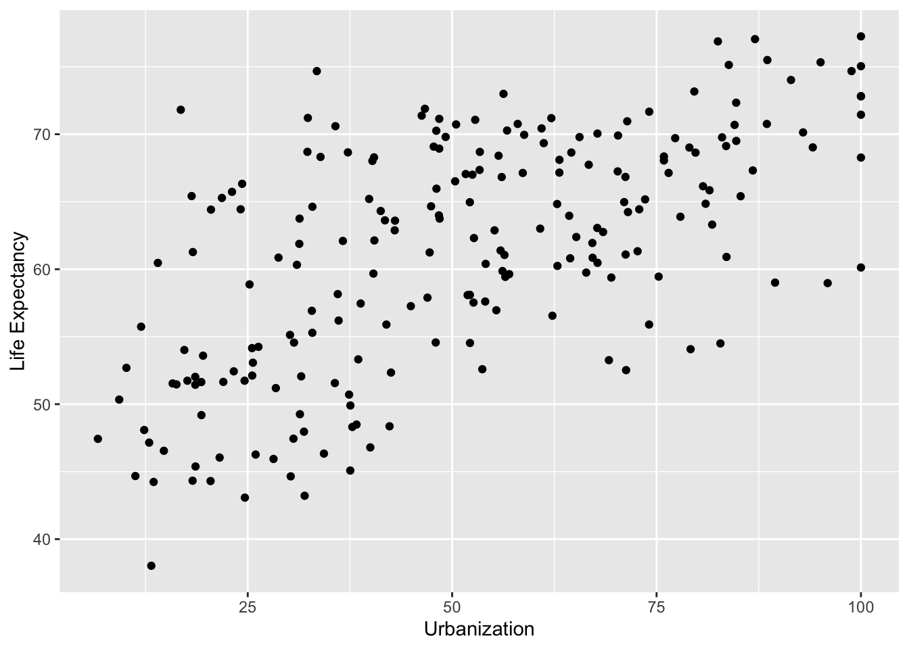
4.2 Adding a Title
fig2<-ggplot(new_data2, mapping = aes(x=urbanization, y=life_expectancy)) +
geom_point()+
xlab("Urbanization") + ylab("Life Expectancy")+
ggtitle("Example Title")
fig2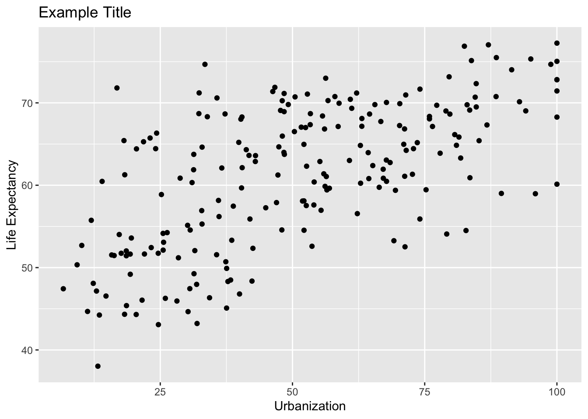
4.3 Getting rid of the grey background
fig2<-ggplot(new_data2, mapping = aes(x=urbanization, y=life_expectancy)) +
geom_point()+
xlab("Urbanization") + ylab("Life Expectancy")+
ggtitle("Example Title")+
theme_bw()
fig2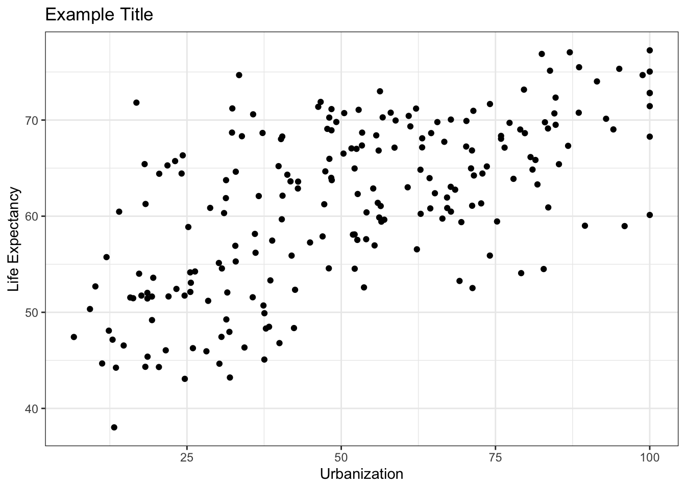
4.4 Fitting a line
Let us fit a line to see if there is any relationship between urbanization and life expectancy. Is it the case that countries with higher levels of urbanization also have higher life expectancy?
fig2<-ggplot(new_data2, mapping = aes(x=urbanization, y=life_expectancy)) +
geom_point()+
xlab("Urbanization") + ylab("Life Expectancy")+
ggtitle("Example Title")+
theme_bw()+
geom_smooth(method = "lm", se=FALSE)
fig2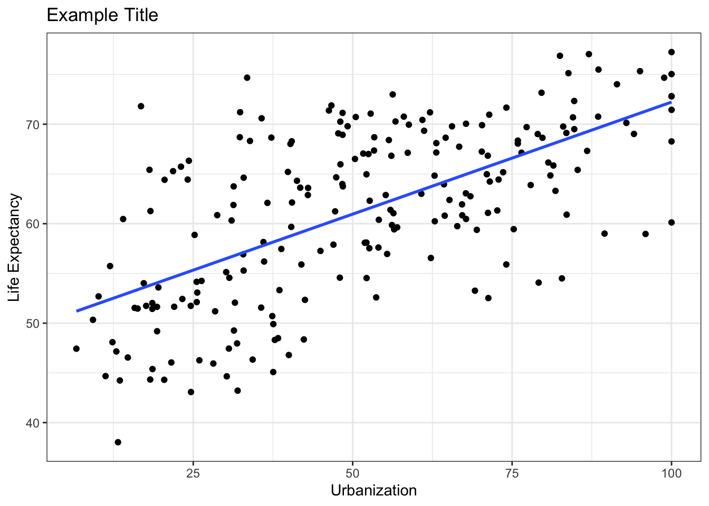
The blue line would indeed suggest that as the level of urbanization goes up, so does life expectancy.
4.5 Fixing the X and Y axis to particular values
But what if we fixed our axies to particular values. Woudl we still see the same effects?
fig3<-ggplot(new_data2, mapping = aes(x=urbanization, y=life_expectancy)) +
geom_point()+
xlab("Urbanization") + ylab("Life Expectancy")+
ggtitle("Example Title")+
theme_bw()+
geom_smooth(method = "lm", se=FALSE)+
scale_x_continuous(breaks=seq(0, 100, by = 20), limits = c(0,100))+
scale_y_continuous(breaks=seq(0, 100, by = 20), limits = c(0,100))
fig3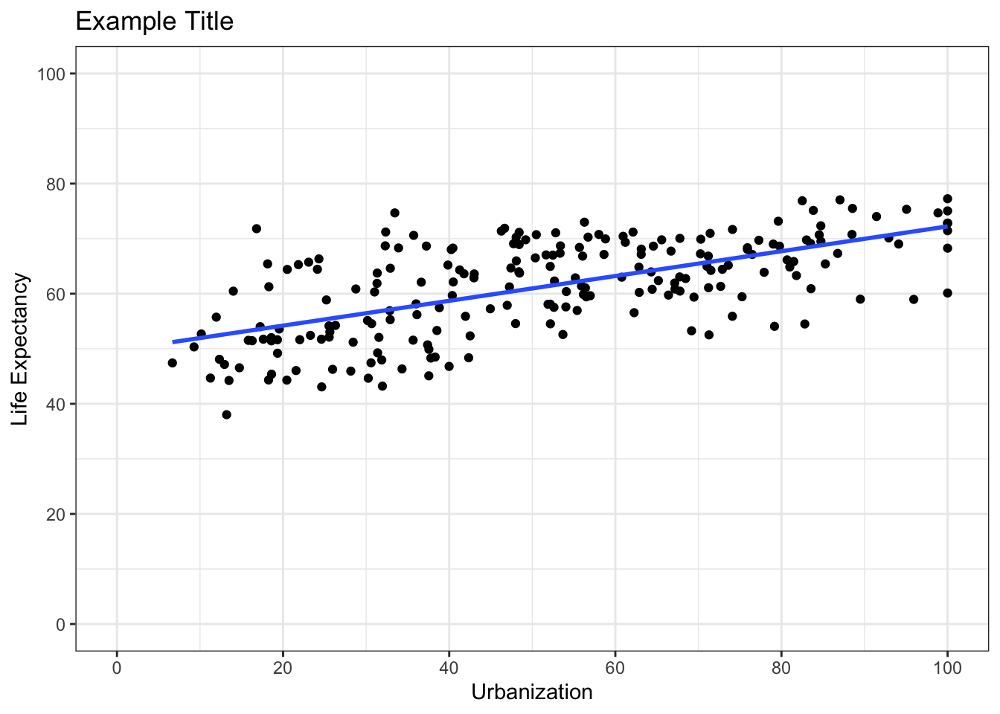
Let’s put the two graphs together. The first graph is the one in which we fix the x and y axis while the second one is the one in which we don’t.
library(gridExtra)
Attaching package: 'gridExtra'The following object is masked from 'package:dplyr':
combinegrid.arrange(fig2, fig3, ncol=2)`geom_smooth()` using formula = 'y ~ x'`geom_smooth()` using formula = 'y ~ x'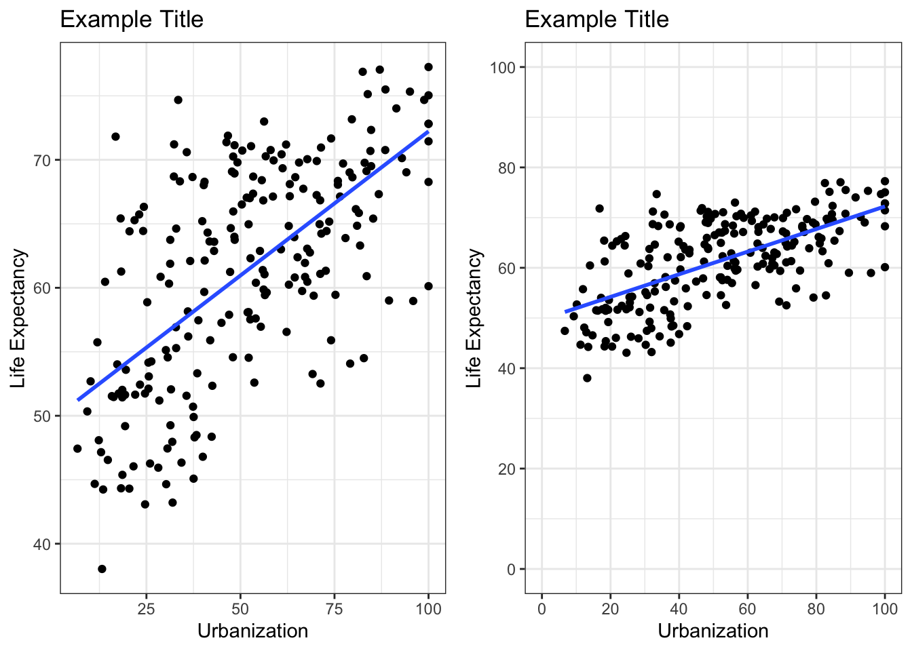
This is interesting. So depending on how we present the data, the relationship may not seem as strong. However, the relationship is exactly the same. Thus, how you present the data matters!
4.6 Labelling the data
There are many ways of labeling the data in ggplot. But let us try a simple way.
fig3<-ggplot(new_data2, mapping = aes(x=urbanization, y=life_expectancy)) +
geom_point()+
xlab("Urbanization") + ylab("Life Expectancy")+
ggtitle("Example Title")+
theme_bw()+
geom_smooth(method = "lm", se=FALSE)+
scale_x_continuous(breaks=seq(0, 100, by = 20), limits = c(0,100))+
scale_y_continuous(breaks=seq(0, 100, by = 20), limits = c(0,100))+
geom_text(aes(label = Entity),
size = 4,
check_overlap = TRUE,
position = position_nudge(y = 1),
data = new_data2)
fig3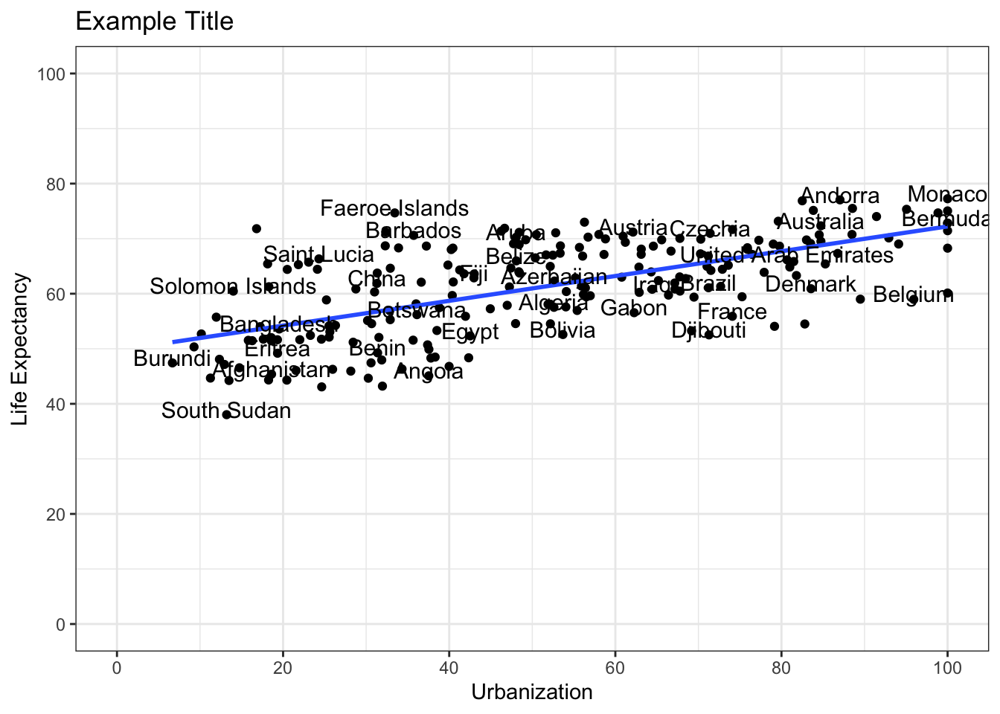
What if we wanted to do selective labeling? Let’s say, we just want to label Italy and the US. How could we do that?
Well, we could create a new dataset based on a subset and then label the data.
4.7 Subsetting the data to two countries
countries_of_interest = c("Italy", "United States")
italy_us_df<-subset(new_data2, Entity %in% countries_of_interest)4.8 Let’s try the labelling again
fig4<-ggplot(new_data2, mapping = aes(x=urbanization, y=life_expectancy)) +
geom_point()+
xlab("Urbanization") + ylab("Life Expectancy")+
ggtitle("Example Title")+
theme_bw()+
geom_smooth(method = "lm", se=FALSE)+
scale_x_continuous(breaks=seq(0, 100, by = 20), limits = c(0,100))+
scale_y_continuous(breaks=seq(0, 100, by = 20), limits = c(0,100))+
geom_text(aes(label = Entity),
size = 4,
check_overlap = TRUE,
position = position_nudge(y = 1),
data = italy_us_df)
fig4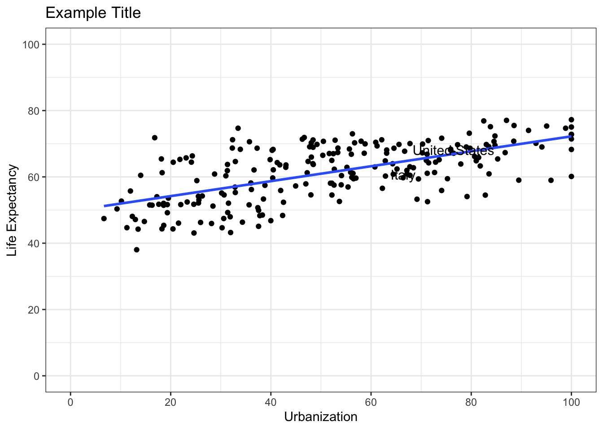
Tis is not ideal. You can barely see the text. We should probably find a better way. The better way is called geom_label.
fig4<-ggplot(new_data2, mapping = aes(x=urbanization, y=life_expectancy)) +
geom_point()+
xlab("Urbanization") + ylab("Life Expectancy")+
ggtitle("Example Title")+
theme_bw()+
geom_smooth(method = "lm", se=FALSE)+
scale_x_continuous(breaks=seq(0, 100, by = 20), limits = c(0,100))+
scale_y_continuous(breaks=seq(0, 100, by = 20), limits = c(0,100))+
geom_label(aes(label = Entity),
size = 4,
position = position_nudge(y = 1),
data = italy_us_df)
fig4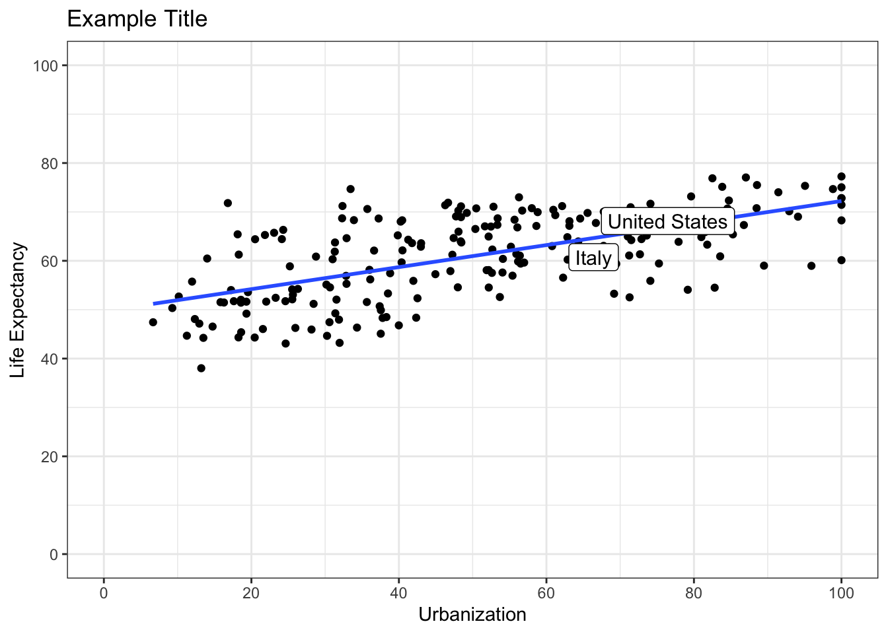
This is better. But still, which one is Italy and which one is the US?
library(ggrepel)
fig4<-ggplot(new_data2, mapping = aes(x=urbanization, y=life_expectancy)) +
geom_point()+
xlab("Urbanization") + ylab("Life Expectancy")+
ggtitle("Example Title")+
theme_bw()+
geom_smooth(method = "lm", se=FALSE)+
scale_x_continuous(breaks=seq(0, 100, by = 20), limits = c(0,100))+
scale_y_continuous(breaks=seq(0, 100, by = 20), limits = c(0,100))+
geom_label_repel(box.padding = 0.5,
aes(label = Entity),
size = 4,
position = position_nudge(y = 1),
data = italy_us_df)
fig4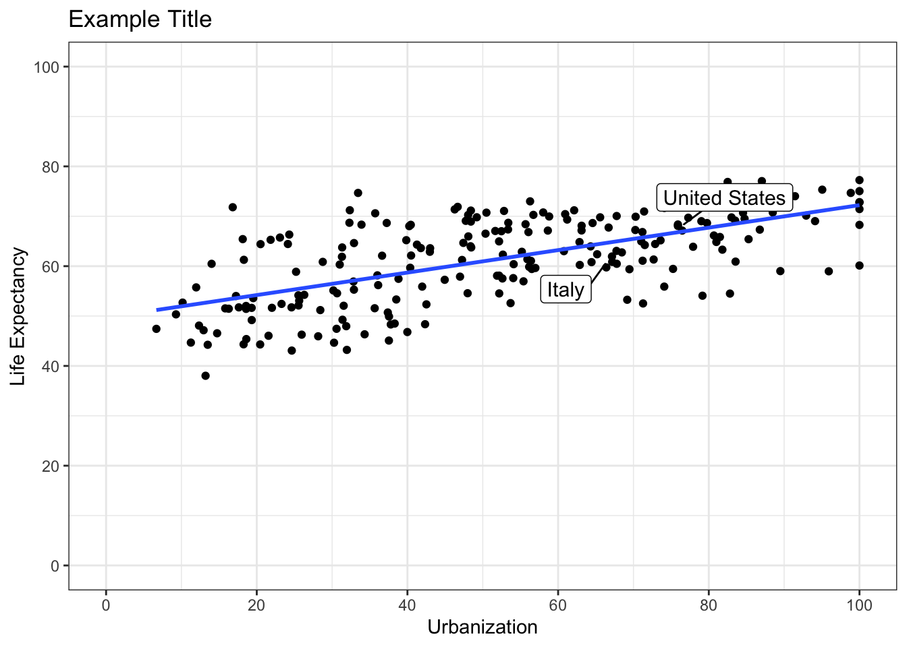
So much better!
5 Creating a bar plot
We need to get to know our data better. What is the distribution of life expectancy. What about urbanization? We can create bar plots and then histograms.
Let’s create a frequency table.
#Step1: Rounding the values
new_data2$life_expectancy_rounded<-round(new_data2$life_expectancy, 0)
new_data2$urbanization_rounded<-round(new_data2$urbanization, 0)
head(new_data2, n=5)# A tibble: 5 × 6
# Groups: Code [5]
Code Entity life_expectancy urbanization life_expectancy_rounded urban…¹
<chr> <chr> <dbl> <dbl> <dbl> <dbl>
1 ABW Aruba 70.3 48.1 70 48
2 AFG Afghanistan 45.4 18.6 45 19
3 AGO Angola 45.1 37.5 45 38
4 ALB Albania 68.3 40.4 68 40
5 AND Andorra 77.0 87.0 77 87
# … with abbreviated variable name ¹urbanization_rounded#Step2: Creating a frequency table
freq_table<-table(new_data2$life_expectancy_rounded)
freq_table
38 43 44 45 46 47 48 49 50 51 52 53 54 55 56 57 58 59 60 61 62 63 64 65 66 67
1 2 3 4 4 5 5 2 2 4 11 6 5 6 4 5 6 6 10 10 6 6 12 11 5 11
68 69 70 71 72 73 74 75 77
9 11 12 12 4 4 1 6 3 #Step3: Turning the table into a dataframe
freq_table<-data.frame(freq_table)#Step4: Inspecting the names
names(freq_table)[1] "Var1" "Freq"#Step5:Identifying how to extract the variable names
names(freq_table)[1][1] "Var1"names(freq_table)[2][1] "Freq"#Step6: Providing more intuitive names
names(freq_table)[1]<-"life_expectancy_rounded"
names(freq_table)[2]<-"frequency"
names(freq_table)[1] "life_expectancy_rounded" "frequency" #Step7: Inspecting variable types
str(freq_table)'data.frame': 35 obs. of 2 variables:
$ life_expectancy_rounded: Factor w/ 35 levels "38","43","44",..: 1 2 3 4 5 6 7 8 9 10 ...
$ frequency : int 1 2 3 4 4 5 5 2 2 4 ...#Step8: Turning factor variables into numeric
freq_table$life_expectancy_rounded<-as.numeric(as.character(freq_table$life_expectancy_rounded))
str(freq_table)'data.frame': 35 obs. of 2 variables:
$ life_expectancy_rounded: num 38 43 44 45 46 47 48 49 50 51 ...
$ frequency : int 1 2 3 4 4 5 5 2 2 4 ...#Step9: Creating the barplot
fig5<-ggplot(data = freq_table, aes(x=life_expectancy_rounded, y=frequency))+
geom_bar(stat="identity")+
theme_bw()
fig5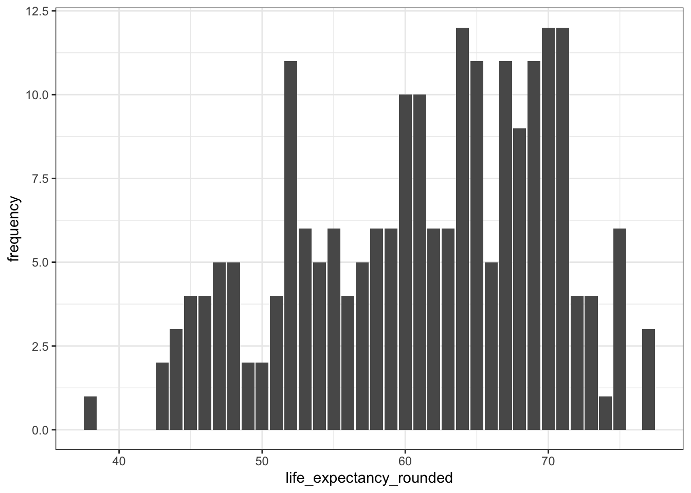
You can obtain a similar graph by using the geom_histogram option in ggplot. You will of course have to use some options.
fig5_b<-ggplot(data = new_data2, aes(x=life_expectancy))+
geom_histogram()+
theme_bw()
fig5_b`stat_bin()` using `bins = 30`. Pick better value with `binwidth`.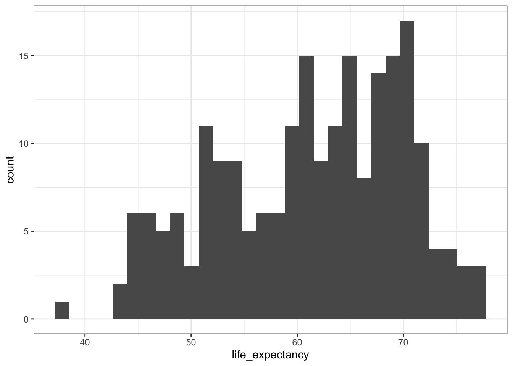
fig5_b<-ggplot(data = new_data2, aes(x=life_expectancy))+
geom_histogram(bins = 50, col="white")+
theme_bw()
fig5_b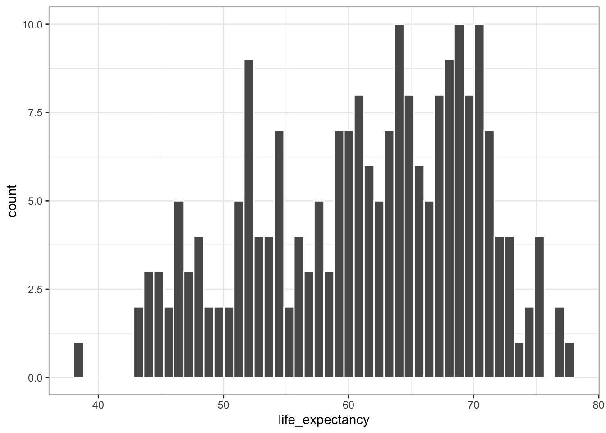
fig5_b<-ggplot(data = new_data2, aes(x=life_expectancy))+
geom_histogram(bins = 35, col="white")+
theme_bw()
fig5_b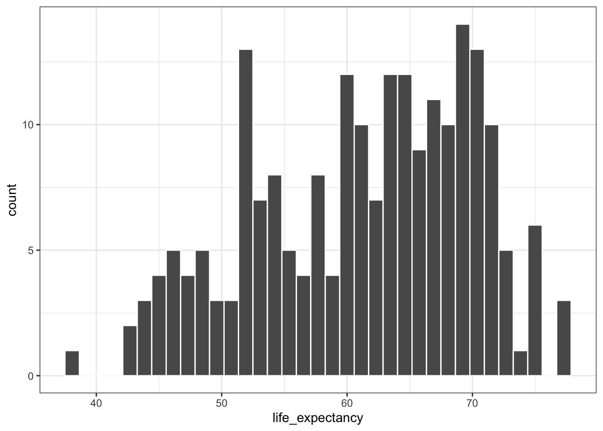
library(gridExtra)
grid.arrange(fig5, fig5_b, ncol=2)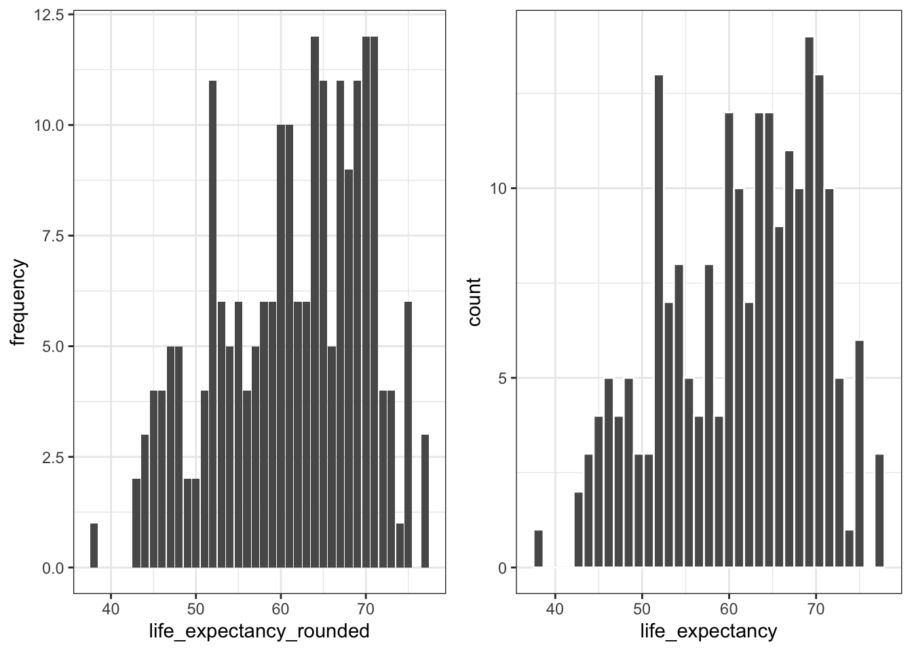
5.1 Calculating the mean
We already know how to calculate the mean for our dataset. This is 61.243 which is obtained by typing mean((new_data2$life_expectancy_rounded)
Let us put it in our graph.
mean_life_expectancy<-mean((new_data2$life_expectancy_rounded))
fig6<-ggplot(data = freq_table, aes(x=life_expectancy_rounded, y=frequency))+
geom_bar(stat="identity")+
theme_bw()+
geom_vline(xintercept=mean_life_expectancy, linetype='dashed', col = 'red')
fig6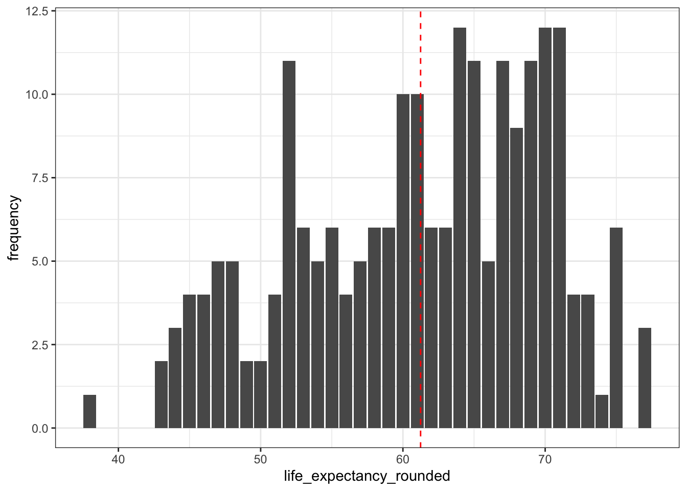
5.2 Adding the mean to the graph
Let us add some some text to indicate that the line is the mean life expectancy in our dataset. The way to do this is by using annotate.
Here is how we can do that.
text_to_add<-"Mean"
y_coord<-11
x_coord<-mean((new_data2$life_expectancy_rounded))
mean_life_expectancy<-mean((new_data2$life_expectancy_rounded))
fig6<-ggplot(data = freq_table, aes(x=life_expectancy_rounded, y=frequency))+
geom_bar(stat="identity")+
theme_bw()+
geom_vline(xintercept=mean_life_expectancy, linetype='dashed', col = 'red')+
annotate(geom="text",
x=x_coord,
y=y_coord,
label=text_to_add,
color="red")
fig6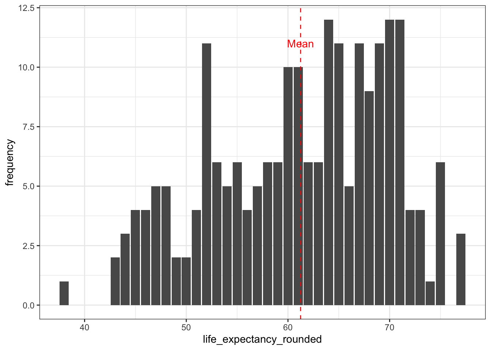
Maybe we want to move the text a bit further to the left. We can subtract 2 from the x_coord.
text_to_add<-"Mean"
y_coord<-11
x_coord<-mean((new_data2$life_expectancy_rounded))-2
mean_life_expectancy<-mean((new_data2$life_expectancy_rounded))
fig6<-ggplot(data = freq_table, aes(x=life_expectancy_rounded, y=frequency))+
geom_bar(stat="identity")+
theme_bw()+
geom_vline(xintercept=mean_life_expectancy, linetype='dashed', col = 'red')+
annotate(geom="text",
x=x_coord,
y=y_coord,
label=text_to_add,
color="red")
fig6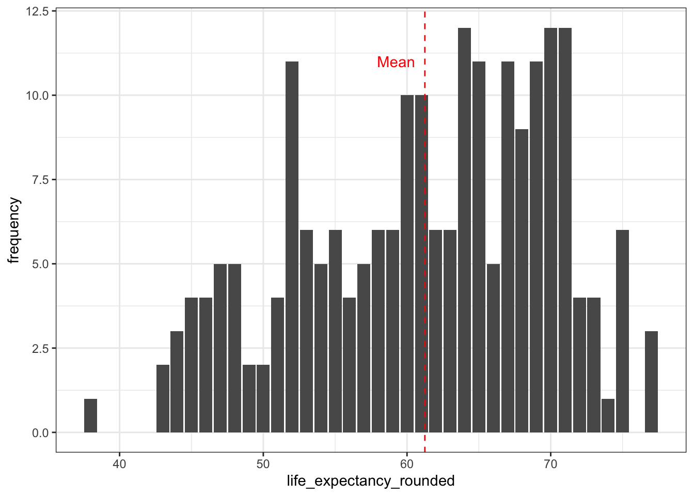
6 Creating a line plot
An important question is understanding how life expectancy might have evolved over time. Let us go back to the original dataset before calculating the averages.
head(life_expectancy, n=6) Entity Code Year Life.expectancy.at.birth..historical.
1 Afghanistan AFG 1950 27.7
2 Afghanistan AFG 1951 28.0
3 Afghanistan AFG 1952 28.4
4 Afghanistan AFG 1953 28.9
5 Afghanistan AFG 1954 29.2
6 Afghanistan AFG 1955 29.9#Renaming variable
names(life_expectancy)[4]<-"life_expectancy"
head(life_expectancy, n=6) Entity Code Year life_expectancy
1 Afghanistan AFG 1950 27.7
2 Afghanistan AFG 1951 28.0
3 Afghanistan AFG 1952 28.4
4 Afghanistan AFG 1953 28.9
5 Afghanistan AFG 1954 29.2
6 Afghanistan AFG 1955 29.9fig7<-ggplot(data = life_expectancy, aes(x = Year, y = life_expectancy))+
geom_line(aes(color = Entity))+
theme_bw()+
guides(color = "none")
fig7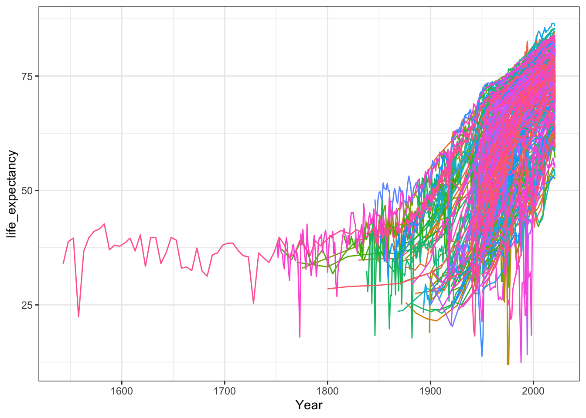
Unfortunately, we cannot make out much out of this graph, as we have way too many countries. It probably makes sense to focus on 1-2 coutries. Let’s take the US and the UK as an example.
6.1 Subsetting the sample to fewer countries
countries_of_interest<-c("United States", "United Kingdom")
df_us_uk<-subset(life_expectancy, Entity %in% countries_of_interest)
head(df_us_uk, n=10) Entity Code Year life_expectancy
19059 United Kingdom GBR 1543 33.94
19060 United Kingdom GBR 1548 38.82
19061 United Kingdom GBR 1553 39.59
19062 United Kingdom GBR 1558 22.38
19063 United Kingdom GBR 1563 36.66
19064 United Kingdom GBR 1568 39.67
19065 United Kingdom GBR 1573 41.06
19066 United Kingdom GBR 1578 41.56
19067 United Kingdom GBR 1583 42.70
19068 United Kingdom GBR 1588 37.05Let us now plot life expectancy only for the US and the UK.
fig8<-ggplot(data = df_us_uk, aes(x = Year, y = life_expectancy))+
geom_line(aes(color = Entity))+
theme_bw()
fig8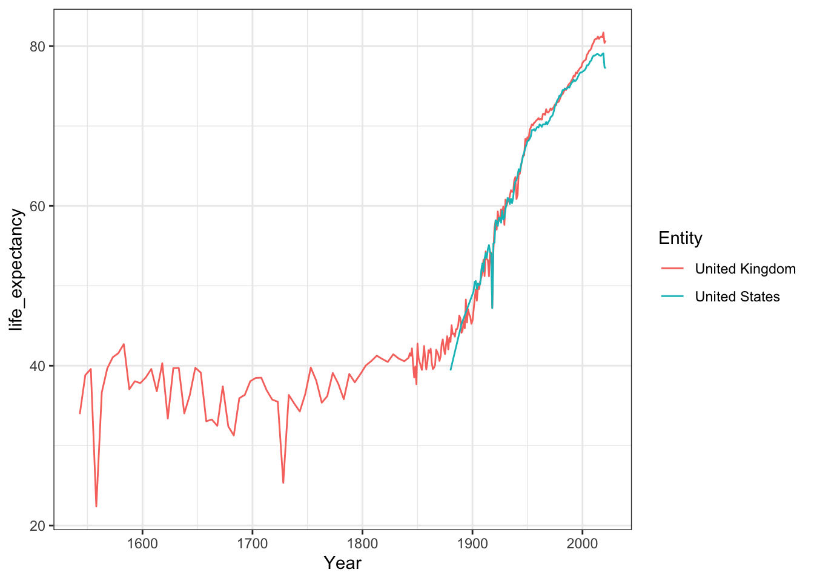
6.2 Subsetting the sample to fewer years
It is kind of cool that in the UK, there is data that goes so far back. For comparison purposes, it might be a good idea to restrict our sample to the period after 1900.
df_us_uk_after1900<-subset(df_us_uk, Year>1900)
head(df_us_uk_after1900, n=10) Entity Code Year life_expectancy
19178 United Kingdom GBR 1901 46.93
19179 United Kingdom GBR 1902 48.36
19180 United Kingdom GBR 1903 49.54
19181 United Kingdom GBR 1904 48.14
19182 United Kingdom GBR 1905 49.92
19183 United Kingdom GBR 1906 49.60
19184 United Kingdom GBR 1907 50.56
19185 United Kingdom GBR 1908 51.02
19186 United Kingdom GBR 1909 51.67
19187 United Kingdom GBR 1910 53.26fig9<-ggplot(data = df_us_uk_after1900, aes(x = Year, y = life_expectancy))+
geom_line(aes(color = Entity))+
theme_bw()
fig9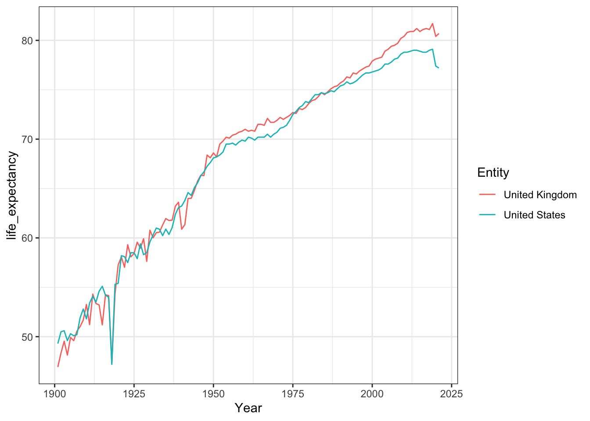
Let’s color the two countries in red and blue so that the difference is clearer.
fig9<-ggplot(data = df_us_uk_after1900, aes(x = Year, y = life_expectancy))+
geom_line(aes(color = Entity))+
theme_bw()+
scale_color_manual(values=c('Red','Blue'))
fig9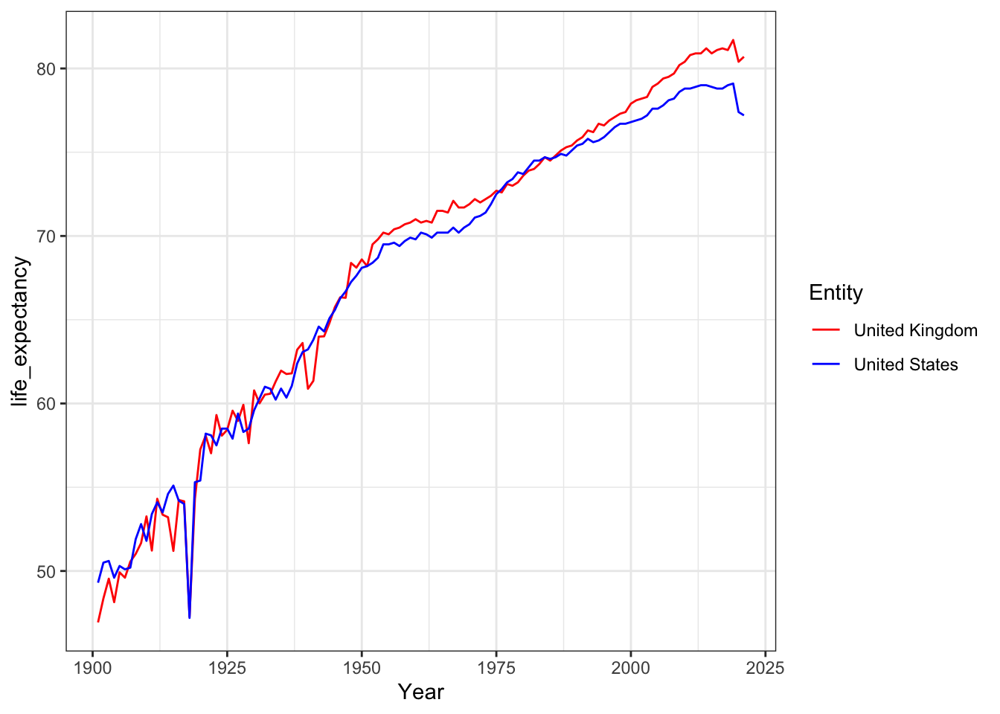
What is the year with the lowest life expectancy for the US?
#Creating a new df with the US
df_us_after1900<-subset(df_us_uk_after1900, Entity=="United States")
df_us_after1900$Year[df_us_after1900$life_expectancy==min(df_us_after1900$life_expectancy)][1] 1918What is the year with the second lowest life expectancy for the US?
#We need to save the second highest year with a low life expectancy
df_us_after1900[order(df_us_after1900$life_expectancy, rev(df_us_after1900$life_expectancy), decreasing = FALSE), ][2,3][1] 1901second_lowest<-df_us_after1900[order(df_us_after1900$life_expectancy, rev(df_us_after1900$life_expectancy), decreasing = FALSE), ][2,3]
second_lowest[1] 1901What is the year with the lowest life expectancy for the UK?
#Creating a new df with the UK
df_uk_after1900<-subset(df_us_uk_after1900, Entity=="United Kingdom")
df_uk_after1900$Year[df_uk_after1900$life_expectancy==min(df_uk_after1900$life_expectancy)][1] 1901Great! We have gone over a variety of graphs in ggplot including points, barplots, and time lines. You are now in a very good position to do some basic data analysis in R.